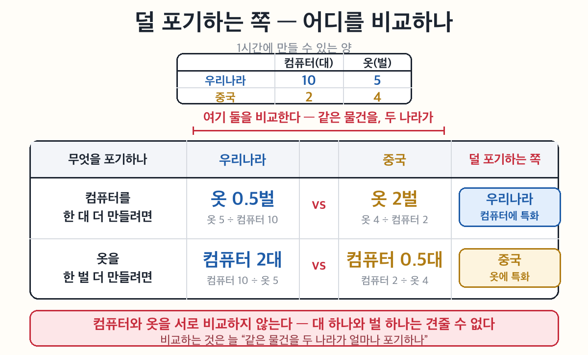
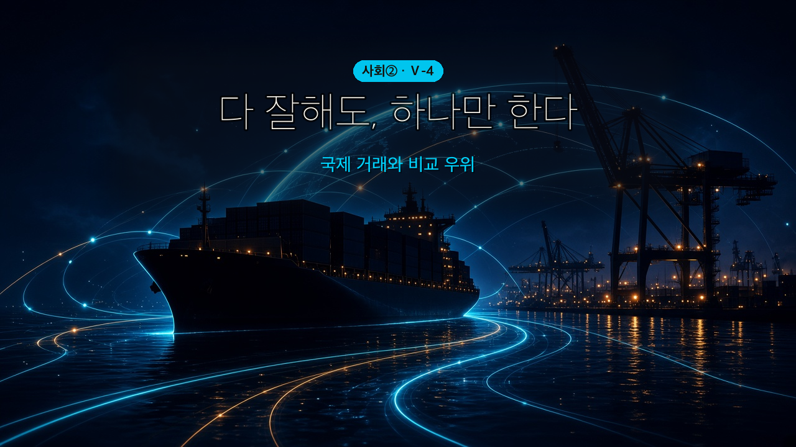
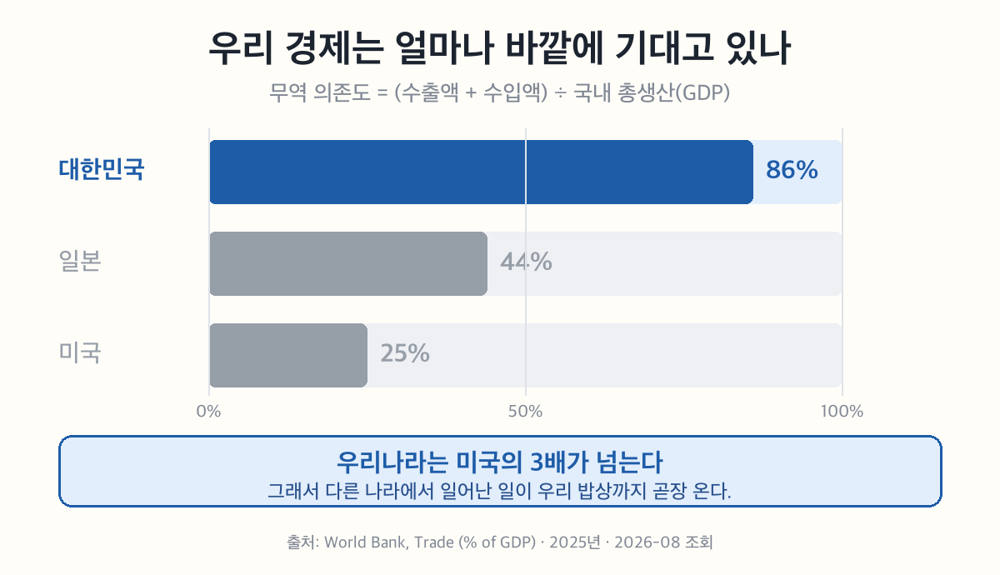
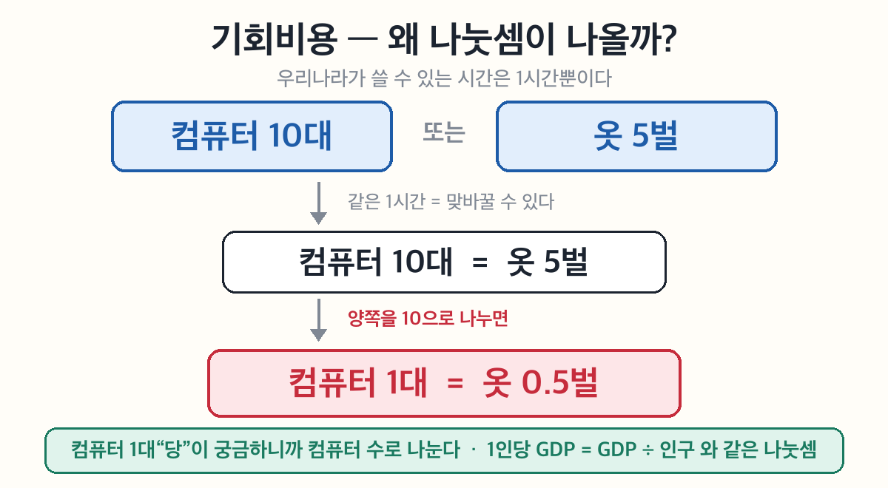
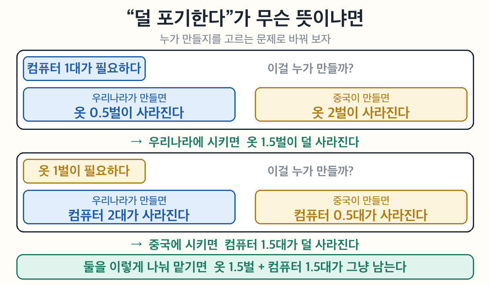
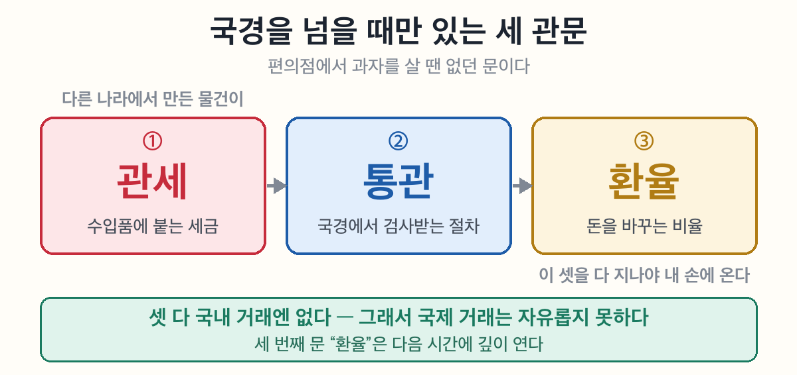

왜 우리는 옷도 만들 수 있는데 중국에서 옷을 사 올까?
국제 거래 = 상품·노동·자본·기술이 국경을 넘어 오가는 것.
| 넘는 것 | 우리 일상의 예 |
|---|---|
| 상품 | 편의점 수입 과자, 중국산 옷 |
| 노동 | 외국인 노동자, 해외 취업 |
| 자본 | 외국인의 한국 주식 투자 |
| 기술 | 반도체 특허 사용료 |
상호 의존 — 한 나라에서 생긴 일이 다른 나라로 번진다는 뜻. 우리나라는 무역 의존도가 약 86%(2025)라 그 영향을 특히 크게 받는다.
나라마다 가진 것이 다르기 때문에 거래한다. 조건은 두 갈래다.
| 갈래 | 무엇이 다른가 | 예 |
|---|---|---|
| 자연환경 | 기후·지형·자원 | 사우디의 석유, 베트남의 커피 |
| 생산 요소 | 노동·자본·기술의 양과 질 | 우리나라의 반도체 기술 |
뒤집어 보면 — 모든 나라가 똑같았다면 무역할 이유가 없다. 다르다는 것이 거래의 출발점이다.

비교 우위 = 그 상품을 만들 때 포기하는 것이 더 적은 쪽. 많이 만드느냐가 아니라 무엇을 포기하느냐로 정해진다.
특화 = 비교 우위가 있는 것 하나에 집중해서 만드는 것. → 그것을 수출하고, 나머지는 수입한다.
🔴 시험에 가장 많이 나오는 함정.
| 절대 우위 | 비교 우위 | |
|---|---|---|
| 무엇을 보나 | 많이 만드는가 | 무엇을 포기하는가 |
| 판정 | 컴퓨터 10>2 · 옷 5>4 → 둘 다 우리나라 | 컴퓨터는 우리 · 옷은 중국 |
| 결론 | — | 나눠서 특화 |
틀린 문장 하나만 기억하자 — "다 잘 만드니까 다 만드는 게 이득이다." 아니다. 둘 다 잘해도 덜 아까운 것 하나에 붙는 게 이득이다.

🎙️ 가방 안을 한번 둘러봐. 폰은 어디 부품이고, 옷은 어디서 왔고, 간식은 어느 나라 거지? 우리는 이미 세계와 거래하며 살아. 그런데 우리나라가 옷도 만들 수 있는데 왜 중국 옷을 사 올까? '다 잘하는 것'보다 '제일 잘하는 것'에 집중하는 게 서로 이득이기 때문이야. 그 비밀, '비교 우위'를 풀어 보자.
- 국제 거래의 의미와 특징을 설명할 수 있다.
- 비교 우위에 따라 국제 거래가 이루어지는 까닭을 설명할 수 있다.
| 낱말 | 쉽게 말하면 | 한자 뜯어보기 | 문장 속에서 |
| 무역(貿易) | 나라끼리 사고팖 | 무(貿, 바꿀) + 역(易, 바꿀) — '바꾸다'가 두 번 | "우리나라는 무역으로 큰 나라다." |
| 특화(特化) | 한 가지에만 집중함 | 특(特, 특별할) + 화(化, 될) | "우리나라는 반도체에 특화했다." |
| 우위(優位) | 더 나은 자리 | 우(優, 뛰어날) + 위(位, 자리) | "그 나라가 우위에 있다." |
| 관세(關稅) | 국경을 지날 때 내는 세금 | 관(關, 빗장·관문) + 세(稅, 세금) | "수입품에 관세가 붙는다." |
| 의존도(依存度) | 얼마나 기대는지의 정도 | 의존(依存, 기댐) + 도(度, 정도) | "우리나라는 무역 의존도가 높다." |
💡 오늘 딱 두 개만 잡자 — 특화(하나에만 집중)와 우위(더 나은 자리). 이 둘이 붙으면 오늘의 핵심 '비교 우위'가 된다.
🎙️ 무역(貿易)이 왜 '바꿀 무 + 바꿀 역'일까? 두 글자가 똑같이 '바꾸다'야. 옛날 사람들은 무역을 돈 버는 일이 아니라 서로 바꾸는 일로 봤다는 뜻이지. 오늘 배울 비교 우위도 결국 "내가 잘하는 걸 주고, 네가 잘하는 걸 받는다"는 맞바꿈 이야기야.
국가 간에 상품·노동·자본·기술 등이 국경을 넘어 거래되는 것을 ①라고 한다. 국제 거래가 활발해지면서 국가 사이의 ②이 심화하고, 교통·통신의 발달로 거래가 더 쉬워지고 있다. 특히 우리나라는 ③가 높아 세계 경제 변화의 영향을 많이 받는다.
(교과서 원문: "전 세계적으로 국제 거래가 활발해지면서 국가 사이의 상호 의존이 심화하고 있다. 교통과 통신의 발달로 국가 사이의 국제 거래가 더 쉬워지기도 한다. 특히 우리나라 경제는 무역 의존도가 높아서 세계 경제 변화의 영향을 많이 받는다." — 천재교육 사회②(구정화) 102쪽)
💡 무역 의존도란? (수출액 + 수입액)을 국내 총생산(GDP)으로 나눈 값이야. 지난 시간에 배운 그 GDP가 여기 분모로 들어온다 — 나라 경제의 몸집과 견줘서 무역이 얼마나 큰지를 보는 거지.
우리나라는 2025년 약 86%(2022년엔 90%를 넘기기도 했다). 나라 경제의 크기와 맞먹는 규모로 사고판다는 뜻이야.
(출처: World Bank, Trade(% of GDP), 대한민국 · 2026-08 조회)
🎬 3분만 보고 가자 — 중3 사회 5단원 국제거래 (워니비 · 3분 31초)
영상도 우리랑 똑같이 시작해 — "여러분 주변을 둘러보세요. 얼마나 많은 물건이 외국에서 왔나요?" 갤럭시와 아이폰 이야기로 국제 거래를 연다. 관세·법·제도·문화가 다르다는 4단계 내용까지 미리 스치니, 오늘 배울 길 전체를 3분에 훑는 셈이야.

🎙️ 86%가 얼마나 큰 걸까? 미국은 25% 안팎, 일본은 40%대야. 우리는 그 두 배가 넘어. 그래서 다른 나라에서 일어난 일이 우리 밥상까지 곧장 온다. 뉴스에서 "환율이 올랐다", "관세를 매긴다" 같은 말이 우리한테 유난히 크게 들리는 이유가 이거야.
국제 거래가 필요한 이유는 나라마다 처한 조건이 다르기 때문이다. 첫째, ④이 달라 생산할 수 있는 농작물과 천연자원이 다르다. 둘째, 노동·자본·기술 같은 ⑤의 양과 질이 다르다. 그래서 각 나라는 상대적으로 더 잘 만드는 상품, 곧 ⑥가 있는 상품에 특화하여 수출하고 그렇지 않은 상품은 수입한다.
(교과서 원문: "국제 거래가 필요한 이유는 각 국가가 처한 조건이 다르기 때문이다. 첫째, 자연환경이 달라 … 둘째, 생산 요소의 양과 질이 다르다. … 각국은 비교 우위가 있는 상품을 특화 생산하여 수출하고 그렇지 않은 상품을 외국에서 수입한다." — 천재교육 사회②(구정화) 102쪽)
🎙️ 사막 나라가 쌀농사를 고집하고, 추운 나라가 바나나를 키우려 하면 엄청 비효율이겠지? 잘 맞는 것끼리 나눠서 바꾸는 게 모두에게 이득. 그게 국제 거래의 출발이야.
한 나라가 두 상품을 모두 더 잘 만들어도(절대 우위), 그중 상대적으로 더 잘 만드는 상품에 ⑦하면 서로 이득을 본다. 예를 들어 우리나라가 컴퓨터·옷을 모두 중국보다 잘 만들어도, 더 잘 만드는 ⑧를 특화해 수출하고 옷은 수입하는 것이 양국 모두에게 이익이다.
(교과서 원문(지도서·주석): "어느 한 나라의 두 재화가 모두 절대 우위에 있을 때도 생산비가 상대적으로 적게 드는(비교 우위) 재화에 특화함으로써 무역 이익이 발생한다." / 수업 TIP: "컴퓨터와 옷에서 우리나라가 중국보다 모두 절대 우위에 있으나 비교 우위에 있는 컴퓨터를 생산하여 수출(=특화)하고 옷은 중국에서 수입한다." — 천재교육 사회② 지도서 4단원)
🎙️ 말로만 들으면 절대 이해 안 돼. 숫자로 보자. 한 사람이 1시간에 만들 수 있는 양이 이렇다고 하자.
| 컴퓨터(대) | 옷(벌) | |
| 우리나라 | 10 | 5 |
| 중국 | 2 | 4 |
먼저 절대 우위. 우리나라가 컴퓨터도(10 > 2) 옷도(5 > 4) 더 많이 만든다. 둘 다 절대 우위다. 그럼 둘 다 우리가 만들면 될까?
여기서 기회비용을 꺼낸다. 3단원에서 배운 그 개념이다 — 무언가를 얻기 위해 포기한 것 중 가장 큰 것. 그런데 왜 갑자기 나눗셈이 나올까? 거기부터 보자.

💡 나눗셈의 정체 — 어려운 규칙이 아니다. “컴퓨터 1대당”이 궁금하니까 컴퓨터 수로 나눈 것뿐이야. ‘당’이 곧 나눗셈이지. 지난 시간 1인당 GDP = GDP ÷ 인구도 똑같았고.
이제 두 나라를 나란히 놓고 따져 보자.
⚠️ 이렇게 읽으면 안 돼 — "컴퓨터 1이 옷 0.5보다 크니까 컴퓨터." 컴퓨터랑 옷은 비교가 안 돼. 대 하나랑 벌 하나 중에 뭐가 더 크겠니? 비교하는 건 우리나라 0.5벌 ↔ 중국 2벌, 그러니까 같은 옷을 두 나라가 얼마나 포기하나야.
🎙️ 잠깐 — "덜 포기하는 쪽이 만든다"가 왜 이득일까? 여기서 많이 헷갈려. 누가 선택하는 건데? 누구한테 이득인데? 질문을 아예 바꿔 보자 — "컴퓨터 1대가 더 필요한데, 누구한테 시킬까?"

편의점에서 과자를 살 땐 그냥 집어서 계산하면 끝이다. 그런데 국경을 넘어오는 물건은 그렇지 않다. 넘어야 할 문이 셋 있다.

🖐 직접 통과시켜 보자 — 세 관문 통과하기 (태블릿·폰에서 열림) 편의점 과자와 해외직구 운동화 중 하나를 골라 문을 하나씩 지나 보면, 가격표에 없던 돈이 어디서 붙는지 눈에 보인다.
국제 거래는 국내 거래와 달리 나라마다 법·제도가 달라 자유롭지 못하다. 수입품에는 ⑨를 매기고 통관 절차를 거쳐야 하며, 화폐가 달라 ⑩로 교환해야 한다.
(교과서 원문(지도서): 국제 거래는 "국가 간 법과 제도가 달라 … 관세를 내야 하고 통관 절차를 거쳐야 … 화폐 간 교환 비율인 환율이 바뀌면 … 상품의 가격이 달라짐." / 장점: 자원·기술 부족 해결·생산성 향상·선택 기회 확대 / 단점: 경쟁력 약한 국내 산업 기반 약화·경제 정책 자율성 훼손 가능 — 천재교육 사회② 지도서 4단원)
🎙️ 첫 번째 문, 관세는 그냥 세금이 아니야. 미국이 한국산 자동차에 관세를 매기면 미국 안에서 한국 차 값이 올라가. 그러면 미국 소비자는 자연스럽게 미국 차를 사게 되지. 자기 나라 물건을 사게 만드는 장치인 셈이야. 그래서 다른 나라가 관세를 올린다는 뉴스는 우리 수출 기업에게 곧장 타격이 돼 — 무역 의존도 86%인 한국은 그 충격을 특히 크게 받고.
🎬 그래서 요즘 뉴스에 매일 나온다 — 미국은 관세를 왜 올리는 걸까? | 상호관세란? (3분차이 · 3분 9초) 관세(關稅)의 '관'이 문에 빗장을 걸어둔 모양이라는 설명부터 상호 관세·보복 관세 같은 요즘 뉴스 용어까지 3분에 이어진다.
| 국제 거래의 좋은 점 | 국제 거래의 어려운 점 | |
| ① | 우리에게 없는 자원·기술을 메운다 | 경쟁력이 약한 국내 산업의 기반이 흔들린다 |
| ② | 경쟁이 생겨 생산성이 높아진다 | 경제 정책을 우리 마음대로 정하기 어려워질 수 있다 |
| ③ | 살 수 있는 물건의 선택이 넓어진다 |
🎙️ 좋은 점 셋, 어려운 점 둘. 갯수가 다르다고 "좋은 게 더 많네"로 읽으면 안 돼. 어려운 점은 특정한 사람들에게 몰려서 온다는 게 핵심이야. 값싼 옷이 들어오면 모두가 조금씩 싸게 사지만, 옷 공장에서 일하던 몇몇 사람은 일자리를 잃어. 이익은 넓게 퍼지고 손해는 좁게 집중되는 것 — 무역을 둘러싼 다툼이 끊이지 않는 이유야.
아래 표는 두 나라가 1시간에 만들 수 있는 양이다. 3단계에서 한 것처럼 기회비용으로 따져 보자.
| 자동차(대) | 쌀(가마) | |
| 가나라 | 6 | 12 |
| 나나라 | 2 | 8 |
1. 자동차와 쌀, 둘 다 절대 우위를 가진 나라는?
2. 가나라가 자동차 1대를 만들 때 포기하는 쌀은 몇 가마? · 나나라는?
💡 힌트 — 자동차 1대“당”을 물었으니 자동차 수로 나눈다. 가나라는 `쌀 12 ÷ 자동차 6`.
3. 그럼 자동차에 비교 우위가 있는 나라는? · 쌀은?
🔎 답 쓰고 나서 확인해 봐 — 두 답이 같은 나라로 나왔다면 방법이 틀린 거야. 비교 우위는 반드시 하나씩 나눠 갖게 돼 있거든.
4. 두 나라가 각자 비교 우위 상품에 특화해서 바꾸면, 두 나라가 쓸 수 있는 물건의 양은 어떻게 될까? 한 문장으로 써 보자.
✍️ 마지막으로 하나만. 지금 네 가방이나 필통에서 물건 하나를 꺼내 'made in' 을 찾아보자. 어느 나라에서 왔니?
그 나라는 무엇에 비교 우위가 있었길래 그 물건이 우리 손까지 왔을까?
🎙️ 1번은 가나라 하나인데, 3번은 둘로 나뉘지. 자동차는 그대로 가나라인데 쌀이 나나라로 넘어가. 그 한 칸이 이 활동의 전부야. 둘 다 잘하는 나라가 있어도, 무엇을 포기하느냐로 따지면 나눠 갖는 게 이득이 된다는 뜻이지.
| 번호 | 문장 | O/X |
| 1 | 국제 거래에서는 상품뿐 아니라 노동·자본·기술도 거래된다. | |
| 2 | 무역 의존도가 높을수록 세계 경제 변화의 영향을 적게 받는다. | |
| 3 | 각 나라는 비교 우위가 있는 상품에 특화하여 수출한다. | |
| 4 | 두 상품을 모두 더 잘 만드는 나라는 두 상품을 모두 수출하는 것이 이득이다. | |
| 5 | 국제 거래에서는 수입품에 관세를 매기고 통관 절차를 거쳐야 한다. |
오늘 배운 걸 안 보고 세 줄로 적어 보자. 틀려도 괜찮아 — 떠올리려고 애쓰는 그 순간에 머리에 박히는 거야.
✍️ 낱말 세 개가 아니라 문장 세 개로. 각 줄이 `~다.` 로 끝나게 쓰자. (예: "비교 우위는 많이 만드는 것이 아니라 덜 포기하는 것으로 정해진다.")
1.
2.
3.
🔗 다음 시간 예고 — 오늘 4단계에서 만난 세 관문 중 마지막, 환율을 깊이 판다. 돈을 바꾸는 비율 하나가 왜 우리 지갑을 흔드는지 보게 될 거야.
우리나라가 컴퓨터와 옷을 모두 중국보다 잘 만든다고 하자. 그래도 옷을 중국에서 수입하는 것이 이득인 까닭은 무엇일까? '비교 우위'와 '특화'라는 말을 넣어 한두 문장으로 써 보자.
그리고 한 가지 더 — 이렇게 특화하면 국내에서 옷을 만들던 사람들은 어떻게 될까? 좋은 점만 있는 건 아니라는 점도 함께 생각해 보자.